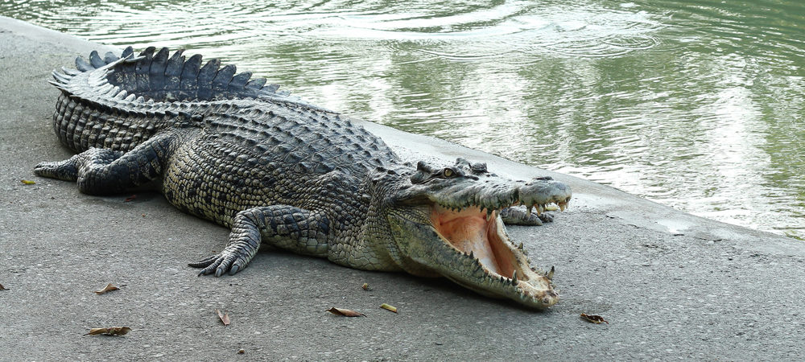
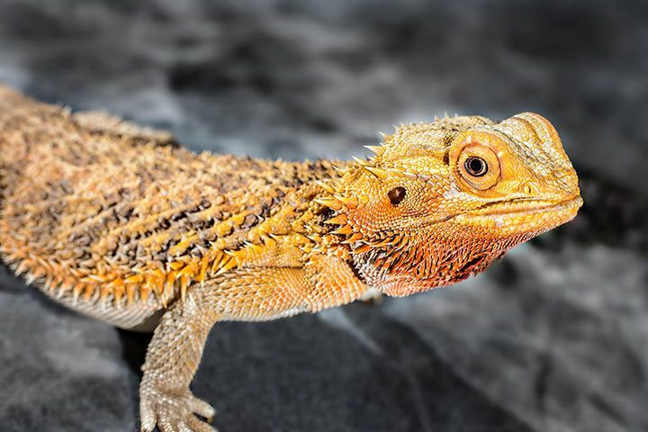
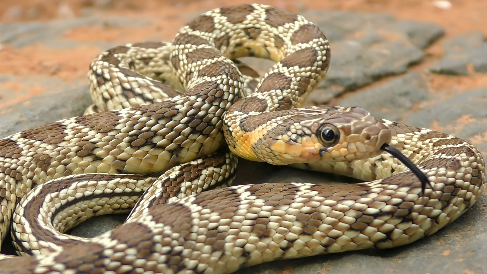

Krokodile
Krokodile sind große, semi-aquatische Reptilien, die für ihre kräftigen Kiefer und ihre Fähigkeit bekannt
sind, Beute im Wasser zu überwältigen. Sie leben hauptsächlich in tropischen Gewässern und ernähren sich
von Fischen, Vögeln und anderen kleinen Tieren.

Schildkröten
Schildkröten sind langsam bewegende Reptilien mit einem harten, schützenden Panzer. Sie leben auf dem Land
und in Gewässern und ernähren sich von Pflanzen, Insekten und anderen kleinen Tieren. Schildkröten sind
bekannt für ihre Langlebigkeit und werden oft als Symbol für Stärke und Ausdauer angesehen.

Echsen
Echsen sind eine vielfältige Gruppe von Reptilien, die in verschiedenen Lebensräumen auf der ganzen Welt
vorkommen. Sie reichen von winzigen Geckos bis hin zu großen Leguanen. Viele Echsen sind hervorragende
Kletterer und Jäger, während andere sich auf den Boden oder unter die Erde zurückziehen, um Beute zu
fangen.

Schlangen
Schlangen sind langgestreckte, schuppenbedeckte Reptilien ohne Gliedmaßen. Sie kommen in verschiedenen Größen,
Farben und Lebensräumen vor. Einige Schlangenarten sind giftig und nutzen ihr Gift, um Beute zu
überwältigen, während andere nicht giftig sind und ihre Beute erwürgen oder erdrosseln. Schlangen sind
wichtige Regulatoren in vielen Ökosystemen und spielen eine wichtige Rolle bei der Kontrolle von
Nagetierpopulationen.
